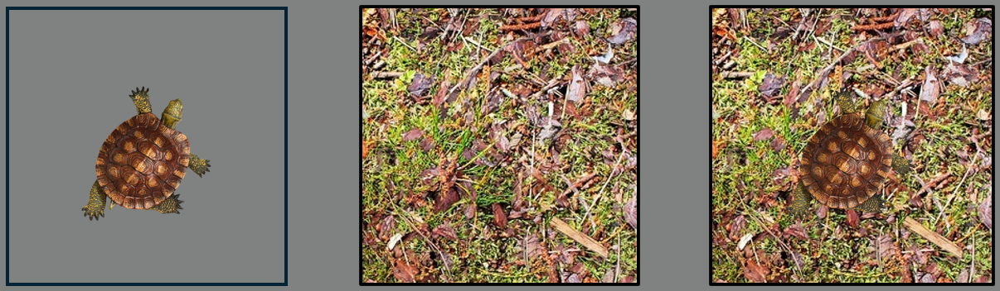

<!doctype html>
<html>
<head>
    <title>My experiment</title>
    <script src="jspsych-6.1.0/jspsych.js"></script>
    <script src="jspsych-6.1.0/plugins/jspsych-fullscreen.js"></script>
    <script src="jspsych-6.1.0/plugins/jspsych-html-keyboard-response.js"></script>
    <script src="jspsych-6.1.0/plugins/jspsych-html-slider-response.js"></script>
    <script src="jspsych-6.1.0/plugins/jspsych-image-keyboard-response.js"></script>
    <script src="jspsych-6.1.0/plugins/jspsych-call-function.js"></script>
    <script src="jspsych-6.1.0/plugins/jspsych-survey-likert.js"></script>
    <script src="jspsych-6.1.0/plugins/jspsych-survey-text.js"></script>
    <script src="jspsych-6.1.0/plugins/jspsych-animation.js"></script>
    <script src="jspsych-6.1.0/plugins/jspsych-external-html.js"></script>
    <script src="jatos.js"></script>

    <link href="jspsych-6.1.0/css/jspsych.css" rel="stylesheet" type="text/css"></link>
    <link href="style.css" rel="stylesheet" type="text/css" />
    <style>
    html, body {
      height: 100%;
      margin: 0;
      padding: 0;
      overflow: hidden;
    }
    </style>
</head>
  <body></body>
  <script>

      /* INITIALIZE SOME VARIABLES */
      const num_steps = 20;
      const stim_dur = 2000; /* milliseconds */
      const fix_dur = 200;

      const practice_reps = 2;    /* x 3 trials - loop this until at least 75% correct  */
      const practice_confidence = 2; /* x 3 trials */

      const num_ima_trials = 2; /* 10 repetation of imagination trials */
      const num_ima_reps = 1; /* how often to repeat the 2 orientations */

      const threshold_level = 70; /* the value to staircase to */
      const lower_bound = 60; /* lower than this - increase isibility */
      const upper_bound = 80; /* higher than this - decrease visibility */
      const num_trials_stair_block = 10; /* 10 evaluate acc after this many trials */
      const num_stair_reps = 3; /* 12 number of staircase reps - two blocks - one per tilt */
      const num_objects = 2 /* 2 - inanimated and animated objects */
      const num_ignore_staircases = 0 /* 3 number of staircases that will not be included in the 70% stopping rule */
      const num_consecutive_stairs = 2 /* number of staircases that obtiaobtained ned 70% acc */

      const num_trials_main  = 24; /* 24 needs to be dividable by 2 */
      const num_blocks = 16; /* 16 - 2 x (2 (cong/incong) x 4(no-ima animate,no-ima inanimate, animate-ima,inanimate-ima) )

      /* Define two sets of stimuli */
      const stimulusSets = 1; /* Math.floor(Math.random() * 2) + 1; */ /* 2 - number of sets. set contain 2 environments and 2 objects */


      /* RESPONSE MAPPING */
      r_idx = jsPsych.randomization.sampleWithReplacement([0, 1], 1);
      if (r_idx == 0) {
          responses = ['A', 'D']; /* yes - no*/
          response_prompt = 'Yes [' + responses[0] + '] or no [' + responses[1] + ']';
      } else if (r_idx == 1) {
          responses = ['D', 'A'];
          response_prompt = 'No [' + responses[1] + '] or yes [' + responses[0] + ']';
      };


      /* GLOBAL VARIABLES */
      window.start_vis_level = 46;
      window.vis_level = window.start_vis_level; /* initial value for psychophysics */
      window.visibility_levels = []; /*visibility levels after psychophysics for both objects  */
      window.trl_num = 0;
      window.stair_num = 0;
      window.block_num = 0;

      // Populate the 2D array with initial values (e.g., zeros)
      for (let i = 0; i < stimulusSets; i++) {
          window.visibility_levels[i] = [];  // Initialize each row (set)
          for (let j = 0; j < num_objects; j++) {
              window.visibility_levels[i][j] = 0;  // Assign default value
          }
      }

      /* IMAGE SEQUENCE FUNCTIONS */
      function makeStimSequence(startValue, stopValue, cardinality, stim, cong_scene, congruency, set, part) {
          var arr = [];
          if (part == 0) { 
              if (stim > 0) {
                  var step = (stopValue - startValue) / (cardinality - 1);
                  for (var i = 0; i < cardinality; i++) {
                      var vis = Math.round(startValue + (step * i));
                      arr.push("img/set_" + set.toString() + "_obj_" + stim.toString() + "_vis_" + vis.toString() + ".png");
                  }
              } else if (stim == 0) {
                  ranNoiseOrder = jsPsych.randomization.repeat([1, 2, 3, 4, 5, 6, 7, 8, 9, 10, 11, 12, 13, 14, 15, 16, 17, 18, 19, 20], 1);
                  for (var i = 0; i < cardinality; i++) {
                      var random_number = ranNoiseOrder[i];
                      arr.push("img/set_" + set.toString() + "_noise_" + random_number.toString() + ".png");
                  }
              }
          } else if (part == 1) {
              if (stim > 0) {
                  var step = (stopValue - startValue) / (cardinality - 1);
                  for (var i = 0; i < cardinality; i++) {
                      var vis = Math.round(startValue + (step * i));
                      arr.push("img/set_" + set.toString() + "_obj_" + stim.toString() + "_scene_" + congruency.toString() + "_vis_" + vis.toString()  + ".png");
                  }
              } else if (stim == 0) {
                  ranNoiseOrder = jsPsych.randomization.repeat([1, 2, 3, 4, 5, 6, 7, 8, 9, 10, 11, 12, 13, 14, 15, 16, 17, 18, 19, 20], 1);
                  for (var i = 0; i < cardinality; i++) {
                      var random_number = ranNoiseOrder[i];
                      arr.push("img/set_" + set.toString() + "_scene_" + cong_scene.toString() + "_noise_" + random_number.toString() + ".png");
                  }
              }

          }
          return arr;
      };

      /* SOME ESSENTIAL VARS*/
      /* fixation */
      var fixation = {
          type: 'html-keyboard-response',
          stimulus: '<div id="fixation-cross" style="position: absolute;">+</div>',
          choices: jsPsych.NO_KEYS,
          trial_duration: fix_dur,
          data: { test_part: 'fixation' },
          on_load: function () {
              // Reference image logic
              const refImage = new Image();
              refImage.src = "img/set_1_noise_1.png"; // Reference image for alignment
              refImage.onload = function () {
                  // Calculate image dimensions and position
                  const viewportWidth = window.innerWidth;
                  const viewportHeight = window.innerHeight;

                  const imgWidth = Math.min(refImage.width, viewportWidth);
                  const imgHeight = Math.min(refImage.height, viewportHeight);

                  const imgLeft = (viewportWidth - imgWidth) / 2;
                  const imgTop = (viewportHeight - imgHeight) / 2;

                  // Offset for embedded cross
                  const embeddedCrossOffsetX = refImage.width / 2 - imgWidth / 2;
                  const embeddedCrossOffsetY = refImage.height / 2 - imgHeight / 2;

                  // Position the fixation cross
                  const fixationCross = document.getElementById('fixation-cross');
                  fixationCross.style.left = `${imgLeft + imgWidth / 2 + embeddedCrossOffsetX}px`; // Center horizontally within the image
                  fixationCross.style.top = `${imgTop + imgHeight / 2 + embeddedCrossOffsetY}px`;  // Center vertically within the image
                  fixationCross.style.transform = 'translate(-50%, -50%)'; // Align center point

                  // Adjust cross size based on image dimensions
                  const crossRatio = 0.05; // Assume cross size is 5% of the image width
                  const crossSize = imgWidth * crossRatio; // Calculate font size in pixels
                  fixationCross.style.fontSize = `${crossSize}px`; // Apply font size
              };
          }
      };

      /* update trial number */
      var update_trial_number = {
          type: "call-function",
          func: function () {
              window.trl_num++;
          },
          on_finish: function () {
              console.log("Updated trial number:", window.trl_num);
          }
      };

      /* CREATE TIMELINE */
      var timeline = [];

      /* INFORMATION SHEET */
      var information_sheet = {
          type: "external-html",
          url: "MROS_6649-04_information_v5.0_20210315.html",
          cont_btn: "Continue"
      };
      timeline.push(information_sheet);

      /* CONSENT FORM */
      var information_sheet = {
          type: "external-html",
          url: "MROS_6649-04_consent_v5.0_20210315_IRL_PB.html",
          cont_btn: "Start",
          check_fn: function (elem) {
              if (document.getElementById('consent_checkbox').checked) {
                  return true;
              }
              else {
                  alert("If you wish to participate, you must check the box next to the statement 'I understand all the above and confirm that I wish to continue.'");
                  return false;
              }
              return false;
          }
      };
      timeline.push(information_sheet);

      // Log Prolific ID
      var prolific_ID = {
          type: 'survey-text',
          questions: [
              { prompt: "Please enter your Prolific ID in the field below.", rows: 2, columns: 40 }
          ]
      };
      timeline.push(prolific_ID);

      /* WELCOME MESSAGE */
      var welcome = {
          type: "html-keyboard-response",
          stimulus: "Welcome to the experiment. Please turn off your sound. <br> <br> Press any key to begin."
      };
      timeline.push(welcome);

      timeline.push({
          type: 'fullscreen',
          fullscreen_mode: true
      });

      /* QUESTIONNAIRES*/
      var questionnaire_instr = {
          type: "html-keyboard-response",
          stimulus: "Before we begin with the main task, <br> we'd like to ask you to fill out a short quationnaire. <br>" +
              "Please take your time to answer the questions truthfully. <br> <br> " +
              "Press [space] to continue ",
          choices: ['space']
      };

      var VVIQ_instr = {
          type: "html-keyboard-response",
          stimulus: "For each item on this questionnaire, try to form a visual image, " +
              "and consider your experience carefully. <br> For any image that you do experience, " +
              "rate how vivid it is using the five-point scale described next. <br>" +
              "If you do not have a visual image, rate vividness as ‘1’.  <br>" +
              "Only use ‘5’ for images that are truly as lively and vivid as real seeing. <br>" +
              "Please note that there are no right or wrong answers to the questions, <br>" +
              "and that it is not necessarily desirable to experience imagery or,  <br> " +
              "if you do, to have more vivid imagery. <br><br>" +
              "Press [space] to start the questionnaire ",
          choices: ['space']
      };

      var scale_VVIQ = [
          "No image at all, you only “know” that you are thinking of the object",
          "Vague and dim",
          "Moderately clear and lively",
          "Clear and reasonably vivid",
          "Perfectly clear and as vivid as real seeing"
      ];

      var vviq_3 = {
          type: "survey-likert",
          preamble: "Think of the front of a shop which you often go to.  Consider the picture that comes before your mind’s eye.",
          questions: [
              { prompt: "The overall appearance of the shop from the opposite side of the road", labels: scale_VVIQ, required: true },
              { prompt: "A window display including colours, shapes and details of individual items for sale", labels: scale_VVIQ, required: true },
              { prompt: "You are near the entrance. The colour, shape and details of the door", labels: scale_VVIQ, required: true },
              { prompt: "You enter the shop and go to the counter. The counter assistant serves you. Money changes hands", labels: scale_VVIQ, required: true },
          ]
      };

      timeline.push(questionnaire_instr, VVIQ_instr, vviq_3);

      /* TASK EXPLANATION */
      var explain_task = {
          type: "html-keyboard-response",
          on_start: function () {
              jsPsych.pluginAPI.preloadImages(["img/example.PNG"])
          },
          stimulus: "Thank you! <br> During the rest of this experiment you will be looking for <strong> objects </strong> in <strong>scenes</strong> (see below) <br>" +
              "<strong>An object</strong> can be either a living thing or a non-living item <strong>(see</strong> <strong>left)</strong> - we will tell you which object to focus on in each scene. <br> " +
              "<strong>A scene</strong> is the surrounding environment where the object is located <strong>(see</strong> <strong>middle)</strong>. <br>" +
              "On every trial, your task it to decide whether the object was present in the scene or not <strong>(see</strong> <strong>right)</strong>.<br><br>" +
              "</img>" +
              "<br><br> Press [space] to continue ",
          choices: ['space']
      }; /*  width=600 */
      timeline.push(explain_task);

      /* PRACTICE TRIALS */

      var practice_instruction = {
          type: "html-keyboard-response",
          on_start: function () {
              // Dynamically select the example image based on the chosen set
              var exampleImage = "img/set_" + stimulusSets + "_example.png";
              jsPsych.pluginAPI.preloadImages([exampleImage]);
          },
          stimulus: function () {
              return "We will first start with a few practice trials <br>" +
                  "Each time, <strong>one</strong> of two object will gradually appear in a noisy environment <br>" +
                  "See the examples for the objects below:<br><br>" +
                  " <br>" +
                  "Afterwards, if you saw an object press [" + responses[0] + "] <br> " +
                  "If you did not see a grating press [" + responses[1] + "] <br>" +
                  "Please use your left hand to make your response (you will need your right hand later) <br>" +
                  "Always keep your eyes fixated on the cross in the middle. <br>" +
                  "<br> Press [space] to start the practice trials";
          },
          choices: ['space']
      };
      timeline.push(practice_instruction);

      var show_dynamic_stimulus = {
          type: 'animation',
          stimuli: jsPsych.timelineVariable('stimulus'),
          choices: jsPsych.NO_KEYS,
          on_start: function () {
              jsPsych.pluginAPI.preloadImages(jsPsych.timelineVariable('stimulus', true))
          },
          frame_isi: 0,
          frame_time: Math.round(stim_dur / num_steps),
          on_load: function () {
              // Ensure all images in the trial are positioned in alignment with the fixation cross
              const images = document.querySelectorAll('img');
              images.forEach(img => {
                  if (img.src.includes('set_') && !img.src.includes('example')) {
                      // Match fixation cross alignment
                      img.style.position = 'fixed'; // Match the fixation cross positioning
                      img.style.top = '50%';        // Center vertically
                      img.style.left = '50%';       // Center horizontally
                      img.style.transform = 'translate(-50%, -50%)'; // Align to center
                      img.style.maxWidth = '100vw'; // Limit to viewport width
                      img.style.maxHeight = '100vh'; // Limit to viewport height
                      img.style.width = 'auto';      // Maintain aspect ratio
                      img.style.height = 'auto';     // Maintain aspect ratio
                      img.style.margin = '0';
                      img.style.padding = '0';
                      img.style.border = 'none';
                      img.style.overflow = 'hidden';
                  }
              });

              // Disable scrollbars during the trial
              document.body.style.overflow = 'hidden';
          }
      };

      var response_screen = {
          type: 'html-keyboard-response',
          stimulus: 'Was there an object on the screen?',
          choices: responses,
          prompt: response_prompt,
          data: jsPsych.timelineVariable('data'),
          on_finish: function (data) {
              data.correct = data.key_press == jsPsych.pluginAPI.convertKeyCharacterToKeyCode(data.correct_response);
          },
      };


      /* combine into trial procedure */
      var detection_practice_procedure = {
          timeline: [fixation, show_dynamic_stimulus, response_screen],
          timeline_variables: [
              {
                  stimulus: makeStimSequence(1, window.vis_level, num_steps, 1, -1, -1, stimulusSets, 0), 
                  data: { test_part: 'det_practice', correct_response: responses[0] }
              },
              {
                  stimulus: makeStimSequence(1, window.vis_level, num_steps, 2, -1, -1, stimulusSets, 0),
                  data: { test_part: 'det_practice', correct_response: responses[0] }
              },
              {
                  stimulus: makeStimSequence(1, window.vis_level, num_steps, 0, -1, -1, stimulusSets, 0),
                  data: { test_part: 'det_practice', correct_response: responses[1] }
              }
          ],
          sample: {
              type: 'fixed-repetitions',
              size: practice_reps,
          }
      };

      var detection_feedback = {
          type: 'html-keyboard-response',
          choices: ['space'],
          stimulus: function () {
              var trials = jsPsych.data.get().last(practice_reps * 3 * 3).filter({ test_part: 'det_practice' });
              var num_correct = trials.filter({ correct: true }).count();
              var accuracy = Math.round(num_correct / trials.count() * 100);

              if (accuracy > 74) {
                  return "Excellent, you responded correctly on " + num_correct +
                      " out of " + trials.count() + " trials. <br>" +
                      "<br> Press [space] to continue "
              } else {
                  return "This time, you responded correctly on " + num_correct +
                      " out of " + trials.count() + " trials. <br>" +
                      "Let's do a few more practice trials <br> " +
                      "<br> Press [space] to continue "
              }
          }
      };

      var detection_practice_loop_node = {
          timeline: [detection_practice_procedure, detection_feedback],
          loop_function: function (data) {
              var trials = jsPsych.data.get().last(practice_reps * 3 * 3).filter({ test_part: 'det_practice' });
              var num_correct = trials.filter({ correct: true }).count();
              var accuracy = Math.round(num_correct / trials.count() * 100);

              if (accuracy > 74) {
                  return false;
              } else {
                  window.vis_level++; /* make it a bit easier then */
                  
                  return true;
              } 
          }
      };
      timeline.push(detection_practice_loop_node); 
   
      /* PRACTICE IMAGERY */
      var instr_imagery = {
          type: "html-keyboard-response",
          stimulus: "Another part of the experiment is that we will sometimes ask you <br> " +
              "to also imagine an object while you are looking at the noisy environment. <br> " +
              "You will always be asked to imagine the same object for a few trials in a row. <br>" +
              "Again, always keep your eyes fixated on the cross in the middle. <br>" +
              "We will now practice this. <br>" +
              "<br> Press [space] to continue",
          choices: ['space']
      }
      timeline.push(instr_imagery);

      window.order_ima = jsPsych.randomization.repeat([0, 1], num_ima_reps);
      window.ima_block = 0;

      for (var block = 0; block < (num_ima_reps * 2); block++) {

          var start_ima_block = {
              type: "html-keyboard-response",
              stimulus: function () {

                  if (window.order_ima[window.ima_block] == 0) {
                      var stim_instr = " a pillow ";
                      var stim_pic = "img/set_" + stimulusSets + "_obj_1_example_ima.png";
                  } else if (window.order_ima[window.ima_block] == 1) {
                      var stim_instr = " a mouse ";
                      var stim_pic = "img/set_" + stimulusSets + "_obj_2_example_ima.png";
                  };

                  jsPsych.pluginAPI.preloadImages([stim_pic])

                  window.ima_block++

                  return "For the next few trials, please imagine the object below: <br> " +
                      " <br>" +
                      "Imagine the object as vividly as possible, as if it was actually presented on the screen. <br> " +
                      "Please keep your eyes open and look at the noisy environment while imagining. <br>" +
                      "After each trial, you will be asked to rate the vividness of your imagery <br> " +
                      "on a scale from 1 (not vivid at all) to 5 (perfectly clear and as vivid as real seeing). <br><br>" +
                      "<br> <br> Press [space] to continue "
              },
              choices: ['space']
          };

          var show_dynamic_noise = {
              type: 'animation',
              stimuli: function () {
                  arr = makeStimSequence(1, window.vis_level, num_steps, 0, -1, -1, stimulusSets, 0);
                  jsPsych.pluginAPI.preloadImages(arr)
                  return arr
              },
              choices: jsPsych.NO_KEYS,
              frame_isi: 0,
              frame_time: Math.round(stim_dur / num_steps)
          };


          var ima_response = {
              type: "html-slider-response",
              labels: ['Not vivid at all', 'Very vivid'],
              stimulus: 'How vividly did you imagine the object?',
              require_movement: true,
              data: { test_part: 'ima_practice' }
          };

          var ima_procedure = {
              timeline: [fixation, show_dynamic_noise, ima_response],
              repetitions: num_ima_trials
          };

          timeline.push(start_ima_block, ima_procedure);
      };

      

      /* STAIRCASE DETECTION */

      var stair_instruction = {
          type: "html-keyboard-response",
          stimulus: "We will now do a calibration block. <br>" +
              "During this part, you again have to indicate whether you saw an object. <br>" +
              "You do not have to imagine the object for this part. <br>" +
              "Over time, it will become harder and harder to see the object. <br>" +
              "Do not worry if you become unsure about whether you saw something or not, that is supposed to happen. <br> " +
              "Just give your best guess on each trial. <br>" +
              "The calibration will take about 5 minutes per object (4 overall) <br>" +
              "<br> Press [space] to continue ",
          choices: ['space']
      };
      timeline.push(stair_instruction);

      var response = [responses[1], responses[0], responses[0]];

      window.stairblock_order = jsPsych.randomization.repeat([0, 1], 1);
      window.stair_block = 0; // Define the order for the current object
      window.staircase_completed = 0; // Counter to track staircases completed

      object_counter = 1 // number of objects that went over staircase
      trials_staircase_counter = 0 // number of trials completed within a staircases 
      staircases_counter = 0 // number of staircases completed
      var continue_staircasing = true
      var continue_trials = true
      var continue_procedures = true


      var stairblock_instruction = {
          type: "html-keyboard-response",
          stimulus: function () {
              if (window.stairblock_order[window.stair_block] == 0) { /* first object (inanimate) */
                  window.trial_order = jsPsych.randomization.repeat([0, 1], num_trials_stair_block / 2);
                  return "You will be looking for the object below: <br>" +
                      " <br>" +
                      "<br> Press [space] to start "
              }
              else if (window.stairblock_order[window.stair_block] == 1) { /* second object (animate) */
                  window.trial_order = jsPsych.randomization.repeat([0, 2], num_trials_stair_block / 2);
                  return "You will be looking for the object below: <br>" +
                      " <br>" +
                      "<br> Press [space] to start "
              }
          },
          choices: ['space'],
          on_finish: function () {
              window.vis_level = window.start_vis_level;
              window.stair_num = 0;
              window.trl_num = 0
              window.accuracy = 0
              window.consecutive_stairs = 0

              // Initialize variables to track consecutive accuracy within the defined window
              window.previous_accuracy_in_range = false; // To track if the previous accuracy met the criteria
              console.log(window.trial_order)
              console.log("Current stair_block:", window.stairblock_order[window.stair_block]);
          }
      };


      var show_dynamic_stimulus = {
          type: 'animation',
          stimuli: function () {
              window.stim_id = window.trial_order[window.trl_num];
              arr = makeStimSequence(1, window.vis_level, num_steps, window.stim_id, -1, -1, stimulusSets, 0);
              jsPsych.pluginAPI.preloadImages(arr)
              return arr
          },
          choices: jsPsych.NO_KEYS,
          frame_isi: 0,
          frame_time: Math.round(stim_dur / num_steps),
      };


      var response_screen = {
          type: "html-keyboard-response",
          choices: responses,
          stimulus: 'Was there an object on the screen?',
          prompt: response_prompt,
          data: function () {
              window.stim_id = window.trial_order[window.trl_num];
              return { test_part: 'stair_test', correct_response: response[window.stim_id] }
          },
          on_finish: function (data) {
              data.correct = data.key_press == jsPsych.pluginAPI.convertKeyCharacterToKeyCode(data.correct_response);
          }
      };

      var within_staircase_procedure = {
          timeline: [fixation, show_dynamic_stimulus, response_screen, update_trial_number]
      };

      var condition_within_staircase = {
          timeline: [within_staircase_procedure],
          conditional_function: function () {
              if (window.trl_num < window.trial_order.length) {
                  continue_trials = true;
                  console.log("Condition within staircase triggered:", continue_trials);

                  return true;
              } else {
                  continue_trials = false;
                  console.log("Condition within staircase triggered:", continue_trials);
                  return false;
              }
          }
      };

      var within_staircase_loop = {
          timeline: [condition_within_staircase],
          loop_function: function () {
              if (continue_trials == true) {
                  return true;
              } else {
                  return false;
              }
          }
      };

      var stair_update = {
          type: "call-function",
          func: function () {
              var trials = jsPsych.data.get().last(num_trials_stair_block * 4).filter({ test_part: 'stair_test' }); /* count timeline events */
              var num_correct = trials.filter({ correct: true }).count();
              var accuracy = Math.round(num_correct / trials.count() * 100); // Ensure accuracy is calculated
              var prev_vis_level = window.vis_level;

              console.log("Accuracy:", accuracy); // Debug accuracy value              

              if (accuracy > upper_bound) {
                  window.vis_level = prev_vis_level - Math.round((accuracy - 70) / 10);
                  window.consecutive_stairs = 0

              } else if (accuracy < lower_bound) {
                  window.vis_level = prev_vis_level + Math.round((70 - accuracy) / 10);
                  window.consecutive_stairs = 0
              } else if (accuracy >= lower_bound && accuracy <= upper_bound) {
                  window.consecutive_stairs++
                  console.log("Number of consecutive stairs:", window.consecutive_stairs); //
              }

              if (window.vis_level > 80) {
                  window.vis_level = 80;
                  window.consecutive_stairs = 0
              }

          },
          on_finish: function () {
              window.accuracy = accuracy
             console.log("Updated visibility level:", window.vis_level);
          }
      };

      var update_stair_number = {
          type: "call-function",
          func: function () {
              if (window.stair_num >= num_stair_reps) {
                  // Save visibility level for the current object after all staircase reps
                  if (window.stairblock_order[window.stair_block] == 0) {
                      window.visibility_levels[0] = window.vis_level;
                  }
                  else if (window.stairblock_order[window.stair_block] == 1) {
                      window.visibility_levels[1] = window.vis_level;
                  }
                  // Log the saved visibility level
                  console.log(`Final visibility level for object ${window.stairblock_order[window.stair_block]} on staircase ${window.stair_num}:`, window.vis_level);

                  if (object_counter == num_objects) {
                      // Output the final visibility levels for both objects
                      console.log("Final visibility levels:", visibility_levels);
                      continue_procedures = false
                      return continue_staircasing = false
                  }

                  object_counter++
                  window.stair_block++
                  console.log("Staircase finished, stopping loop.");
                  return continue_staircasing = false
              }
              else if ((window.stair_num >= num_ignore_staircases) &&  (window.consecutive_stairs >= num_consecutive_stairs) ) {
                  // Save visibility level for the current object after all staircase reps
                  if (window.stairblock_order[window.stair_block] == 0) {
                      window.visibility_levels[0] = window.vis_level;
                  }
                  else if (window.stairblock_order[window.stair_block] == 1) {
                      window.visibility_levels[1] = window.vis_level;
                      // Check if there are more objects
                  }
                  if (object_counter == num_objects) {
                      console.log("Final visibility levels:", visibility_levels);
                      continue_procedures = false
                      
                  } 
                  console.log(`Final visibility level for object ${window.stairblock_order[window.stair_block]}:`, window.vis_level);
                  object_counter++
                  window.stair_block++
                  // Output the final visibility levels for both objects
                  return continue_staircasing = false

              } else {
                  if (window.stairblock_order[window.stair_block] === 0) {
                      window.trial_order = jsPsych.randomization.repeat([0, 1], num_trials_stair_block / 2);
                  } else if (window.stairblock_order[window.stair_block] === 1) {
                      window.trial_order = jsPsych.randomization.repeat([0, 2], num_trials_stair_block / 2);
                  }
                  // Increment staircase number if not terminating
                  window.stair_num++;
                  window.trl_num = 0;
                  console.log("Continuing staircasing...", window.stair_num);
                  return continue_staircasing = true
              }

          }
      };

      var between_staircase_procedure = {
          timeline: [within_staircase_loop, stair_update, update_stair_number],
          loop_function: function () {
              if (continue_staircasing == true) {
                  return true;
              }
              else {
                  return false;

              }
          }
      };

      var between_staircase_loop = {
          timeline: [between_staircase_procedure],
          loop_function: function () {
              if (continue_staircasing == true) {
                  return true;
              } else {
                  return false;
              }
          }
      };

      var between_objects_loop = {
          timeline: [stairblock_instruction, between_staircase_loop],
          loop_function: function () {
              if (continue_procedures == true) {
                  return true;
              } else {
                  window.trl_num = 0;
                  return false;
              }
          }
      };


      timeline.push(between_objects_loop);


      /* VISIBILITY PRACTICE */
      var confidence_instruction1 = {
          type: "html-keyboard-response",
          stimulus: "Well done! <br><br> The final part of the experiment is that during those trials <br>" +
              "in which you don't have to imagine, immediately after you indicated that you did or did not  <br>" +
              "see a stimulus, you will be asked how visible the stimulus was. <br> <br>" +
              "<br> Press [space] to continue",
          choices: ['space']
      };
      timeline.push(confidence_instruction1);

      var confidence_instruction2 = {
          type: "html-keyboard-response",
          stimulus: "The lowest end of the scale reflects that the stimulus was not vivisble at all. <br>" +
              "The highest end of the scale reflects that the stimulus was clearly visible. <br><br>" +
              "You will indicate your the visibility by dragging a slider with your mouse. <br>" +
              "<br> Press [space] to do a few practice trials",
          choices: ['space']
      };
      timeline.push(confidence_instruction2);

      var visibility_response = {
          type: 'html-slider-response',
          labels: ['Not visible at all', 'Very visible'],
          stimulus: 'How vividly did you see the object?',
          require_movement: true, // to make sure the participant responds
      };

      window.order_confPrac = jsPsych.randomization.repeat([0, 1, 2], practice_confidence);
      window.trl_num = 0;
      console.log("Reset trial number:", window.trl_num);

      for (var prac = 0; prac < (practice_confidence * 3); prac++) {


          var show_dynamic_noise = {
              type: 'animation',
              stimuli: function () {
                  let index = window.order_confPrac[window.trl_num];

                  if (index === 1) {
                      index = 0;
                  } else if (index === 2) {
                      index = 1;
                  }

                  console.log("Trial:", window.trl_num, "Index Used:", index, "Visibility Level:", window.visibility_levels[index]);

                  let arr = makeStimSequence(1, window.visibility_levels[index], num_steps, window.order_confPrac[window.trl_num], -1, -1, stimulusSets, 0);

                  jsPsych.pluginAPI.preloadImages(arr)
                  return arr;
              },
              choices: jsPsych.NO_KEYS,
              frame_isi: 0,
              frame_time: Math.round(stim_dur / num_steps),
              on_finish: function () {
                  console.log(window.trl_num)
              }
          };

          var response_screen = {
              type: "html-keyboard-response",
              choices: responses,
              stimulus: 'Was there an object on the screen?',
              prompt: response_prompt,
              data: function () {
                  // return { test_part: 'prac_conf', correct_response: response[window.order_confPrac[window.trl_num]] }
                  let responseIndex = window.order_confPrac[window.trl_num];

                  // Debugging: Check if responseIndex is valid
                  if (responseIndex === undefined || response[responseIndex] === undefined) {
                      console.error("Error: Invalid responseIndex", responseIndex, "trl_num:", window.trl_num);
                  }

                  return {
                      test_part: 'prac_conf',
                      correct_response: response[responseIndex] || "default_response"
                  };

              },
              on_finish: function (data) {
                  // data.correct = data.key_press == jsPsych.pluginAPI.convertKeyCharacterToKeyCode(data.correct_response);
                  console.log("Recorded response:", data.key_press, "Expected:", data.correct_response);

                  if (data.correct_response) {
                      data.correct = data.key_press == jsPsych.pluginAPI.convertKeyCharacterToKeyCode(data.correct_response);
                  } else {
                      console.warn("Missing correct_response, skipping comparison.");
                  }
              }
          };

          timeline.push(fixation, show_dynamic_noise, response_screen, visibility_response, update_trial_number);

      }


      /* MAIN EXPERIMENT */
      var main_start = {
          type: "html-keyboard-response",
          stimulus: "We will now continue to the main part of the experiment. <br>" +
              "There will be " + num_blocks + " blocks in total. <br> " +
              "During each block an object will be presented on 50% of the trials. <br> " +
              "Additionally, during each block you will be asked to either imagine the object or nothing. <br>" +
              "Please imagine the object as vividly as possible, as if it was actually presented on the screen. <br>" +
              "Your task is again to indicate whether an object was presented or not and how vividly did you imagine or see the object. <br>" +
              "Feel free to take a short break at the start of a new block whenever you want to. <br> " +
              "<br> Press [space] to continue ",
          choices: ['space']
      };
      timeline.push(main_start);

      /* create randomization */
      condition_order = jsPsych.randomization.repeat([0, 1, 2, 3, 4, 5, 6, 7], num_blocks / 8);

      /* run over blocks */
      for (var block = 0; block < num_blocks; block++) {

          var block_start = {
              type: "html-keyboard-response",
              stimulus: function () {

                  window.trl_num = 0;

                  if (condition_order[window.block_num] == 0) {
                      window.trial_order = jsPsych.randomization.repeat([0, 1], num_trials_main / 2); /* set 1 first object (inanimate) - no ima - cong */
                      window.object_vis_level = window.visibility_levels[0]
                      window.set_num = 1
                      window.obj = 1
                      window.congruency = 0
                      var stim_pic = "img/set_1_obj_1_example.png";
                      var ima_instr = " imagine <strong>nothing</strong> ";
                  } else if (condition_order[window.block_num] == 1) {
                      window.trial_order = jsPsych.randomization.repeat([0, 1], num_trials_main / 2); /* set 1 first object (inanimate) -  first object (inanimate) ima - cong */
                      window.object_vis_level = window.visibility_levels[0]
                      window.set_num = 1
                      window.obj = 1
                      window.congruency = 0
                      var stim_pic = "img/set_1_obj_1_example.png";
                      var ima_instr = " <strong>imagine the object </strong> (see above) ";
                  } else if (condition_order[window.block_num] == 2) {
                      window.trial_order = jsPsych.randomization.repeat([0, 1], num_trials_main / 2); /* set 1 first object (inanimate) - no ima - incong */
                      window.object_vis_level = window.visibility_levels[0]
                      window.set_num = 1
                      window.obj = 2
                      window.congruency = 1
                      var stim_pic = "img/set_1_obj_1_example.png";
                      var ima_instr = " imagine <strong>nothing</strong>  ";
                  } else if (condition_order[window.block_num] == 3) {
                      window.trial_order = jsPsych.randomization.repeat([0, 1], num_trials_main / 2); /*  set 1 first object (inanimate) -  first object (inanimate) ima - incong */
                      window.object_vis_level = window.visibility_levels[0]
                      window.set_num = 1
                      window.obj = 2
                      window.congruency = 1
                      var stim_pic = "img/set_1_obj_1_example.png";
                      var ima_instr = " <strong>imagine the object </strong> (see above) ";
                  } else if (condition_order[window.block_num] == 4) {
                      window.trial_order = jsPsych.randomization.repeat([0, 2], num_trials_main / 2); /* set 1 second object (animate) -  no ima - cong */
                      window.object_vis_level = window.visibility_levels[1]
                      window.set_num = 1
                      window.obj = 2
                      window.congruency = 0
                      var stim_pic = "img/set_1_obj_2_example.png";
                      var ima_instr = " imagine <strong>nothing</strong> ";
                  } else if (condition_order[window.block_num] == 5) {
                      window.trial_order = jsPsych.randomization.repeat([0, 2], num_trials_main / 2); /* set 1 second object (animate) - second object (animate) ima - cong */
                      window.object_vis_level = window.visibility_levels[1]
                      window.set_num = 1
                      window.obj = 2
                      window.congruency = 0
                      var stim_pic = "img/set_1_obj_2_example.png";
                      var ima_instr = "<strong>imagine the object </strong> (see above) ";
                  } else if (condition_order[window.block_num] == 6) {
                      window.trial_order = jsPsych.randomization.repeat([0, 2], num_trials_main / 2); /* set 1 second object (animate) - no ima - incong */
                      window.object_vis_level = window.visibility_levels[1]
                      window.set_num = 1
                      window.obj = 1
                      window.congruency = 1
                      var stim_pic = "img/set_1_obj_2_example.png";
                      var ima_instr = " imagine <strong>nothing</strong> ";
                  } else if (condition_order[window.block_num] == 7) {
                      window.trial_order = jsPsych.randomization.repeat([0, 2], num_trials_main / 2); /* set 1 second object (animate) - second object (animate) ima - incong */
                      window.object_vis_level = window.visibility_levels[1]
                      window.set_num = 1
                      window.obj = 1
                      window.congruency = 1
                      var stim_pic = "img/set_1_obj_2_example.png";
                      var ima_instr = "<strong>imagine the object </strong> (see above) ";
                  }


                  jsPsych.pluginAPI.preloadImages([stim_pic])

                  return "<br> This is block " + (window.block_num + 1) + " out of " + num_blocks +
                      "<br> During this block you will see the object below: " +
                      " <br>" +
                      "<br> Please " + ima_instr + "during each trial. <br><br>" +
                      "<br> <br> Press [space] to continue "
              },
              choices: ['space']
          };
          timeline.push(block_start);

          /* trial loop */
          for (var trl = 0; trl < num_trials_main; trl++) {

              var show_dynamic_stimulus = {
                  type: 'animation',
                  stimuli: function () {

                      window.stim_id = window.trial_order[window.trl_num];
                      arr = makeStimSequence(1, window.object_vis_level, num_steps, window.stim_id, window.obj, window.congruency, window.set_num, 1);
                      jsPsych.pluginAPI.preloadImages(arr)
                      return arr
                  },
                  choices: jsPsych.NO_KEYS,
                  frame_isi: 0,
                  frame_time: Math.round(stim_dur / num_steps),
                  on_finish: function () {
                      console.log(window.vis_level);
                  }
              };

              var response_screen = {
                  type: "html-keyboard-response",
                  choices: responses,
                  stimulus: 'Was there an object on the screen?',
                  prompt: response_prompt,
                  data: function () {
                      window.stim_id = window.trial_order[window.trl_num];
                      return { test_part: 'main_test', correct_response: response[window.stim_id], condition: condition_order[window.block_num] }
                  },
                  on_finish: function (data) {
                      data.correct = data.key_press == jsPsych.pluginAPI.convertKeyCharacterToKeyCode(data.correct_response);
                  }
              };


              var vividnessvisibility_screen = {
                  type: 'html-slider-response',
                  labels: function () {
                      if (condition_order[window.block_num] == 0 || condition_order[window.block_num] == 2 || condition_order[window.block_num] == 4 || condition_order[window.block_num] == 6)  {
                          return ['Not vivid at all', 'Very vivid'];
                      } else if (condition_order[window.block_num] == 1 || condition_order[window.block_num] == 3 || condition_order[window.block_num] == 5 || condition_order[window.block_num] == 7) {
                          return ['Not vivid at all', 'Very vivid'];
                      }
                  },
                  stimulus: function () {
                      if (condition_order[window.block_num] == 0 || condition_order[window.block_num] == 2 || condition_order[window.block_num] == 4 || condition_order[window.block_num] == 6) {
                          return 'How vividly did you see the object?';
                      } else if (condition_order[window.block_num] == 1 || condition_order[window.block_num] == 3 || condition_order[window.block_num] == 5 || condition_order[window.block_num] == 7) {
                          return 'How vividly did you imagine the object?';
                      }
                  },
                  require_movement: true, // to make sure the participant responds
              };

              timeline.push(fixation, show_dynamic_stimulus, response_screen, vividnessvisibility_screen, update_trial_number);
          }

          /* ask about imagery */
          var check_imagery = {
              type: "html-keyboard-response",
              choices: ['1', '2', '3'],
              stimulus: 'Check! <br> Did you imagine an object during this block?',
              prompt: 'Yes, a pillow [1] yes, a squirrel [2] or no [3]',
              data: function () {
                  if (condition_order[window.block_num] == 0 || condition_order[window.block_num] == 2 || condition_order[window.block_num] == 4 || condition_order[window.block_num] == 6) {
                      return { test_part: 'ima_check', correct_response: '3' }
                  } else if (condition_order[window.block_num] == 1 || condition_order[window.block_num] == 3) {
                      return { test_part: 'ima_check', correct_response: '1' }
                  } else if (condition_order[window.block_num] == 5 || condition_order[window.block_num] == 7) {
                      return { test_part: 'ima_check', correct_response: '2' }
                  };
              },
              on_finish: function (data) {
                  data.correct = data.key_press == jsPsych.pluginAPI.convertKeyCharacterToKeyCode(data.correct_response);
              }
          };

          var feedback_imagery = {
              type: "html-keyboard-response",
              choices: ['space'],
              stimulus: function () {
                  var trials = jsPsych.data.get().last(10).filter({ test_part: 'ima_check' });
                  var num_correct = trials.filter({ correct: true }).count();
                  if (num_correct == 0) {
                      return "That's incorrect, please read the instructions carefully. <br>" +
                          "<br> Press [space] to continue"
                  } else if (num_correct > 0) {
                      return "Excellent! <br><br> Press [space] to continue"
                  }
              }
          };

          /* update block number */
          var update_block_number = {
              type: "call-function",
              func: function () {
                  window.block_num++;
              }
          };
          timeline.push(check_imagery, feedback_imagery, update_block_number);
      }

      /* DEBRIEF QUESTIONS */
      var debrief_questions = {
          type: 'survey-text',
          questions: [
              { prompt: "What is your age?", rows: 2, columns: 40 },
              {
                  prompt: "The answer to this question will not affect your payment. " +
                      "Did you actually imagine the objects in the blocks when we asked you to?", rows: 2, columns: 40
              },
              { prompt: "Do you have any other comments?", rows: 2, columns: 40 },

          ]
      };
      timeline.push(debrief_questions);

      var end_experiment = {
          type: "html-keyboard-response",
          stimulus: 'Press any key to finish the experiment. <br> Thank you for participating!'
      };
      timeline.push(end_experiment);


      /* START THE EXPERIMENT */
      jsPsych.init({
          timeline: timeline,
          on_finish: function () {
              var resultJson = JSON.stringify(jsPsych.data.get().csv());
              jatos.submitResultData(resultJson, jatos.endStudy);
          }
      });
  </script>
</html>
